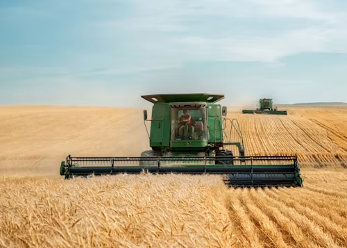
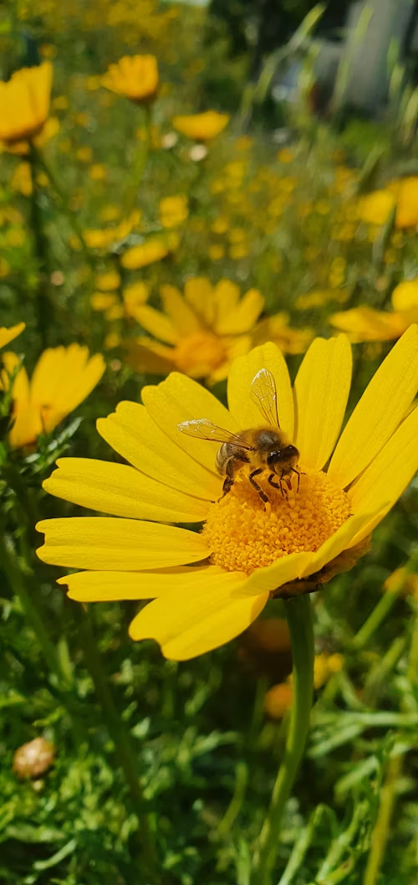
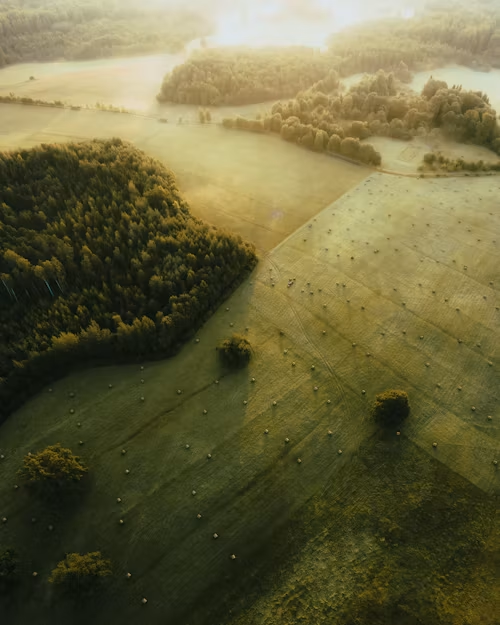
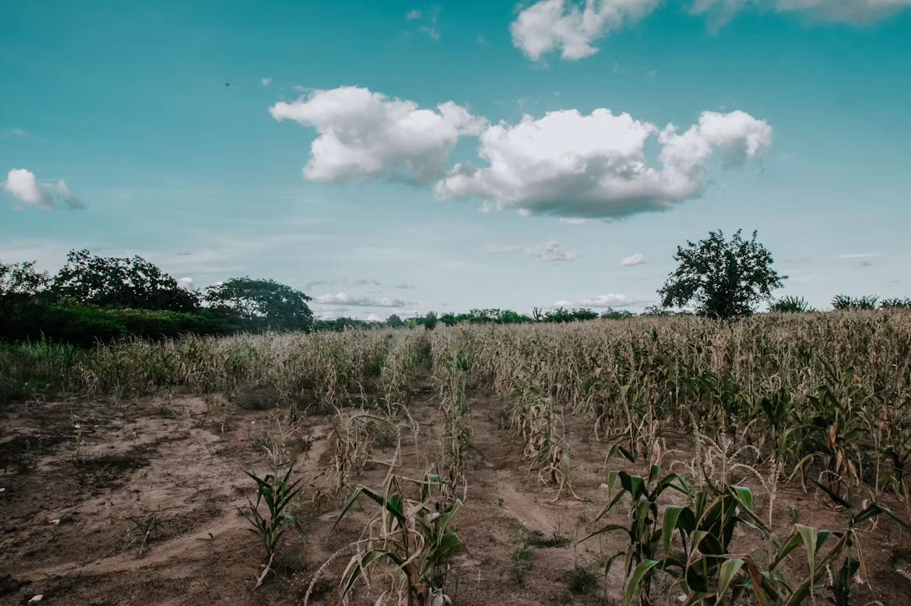
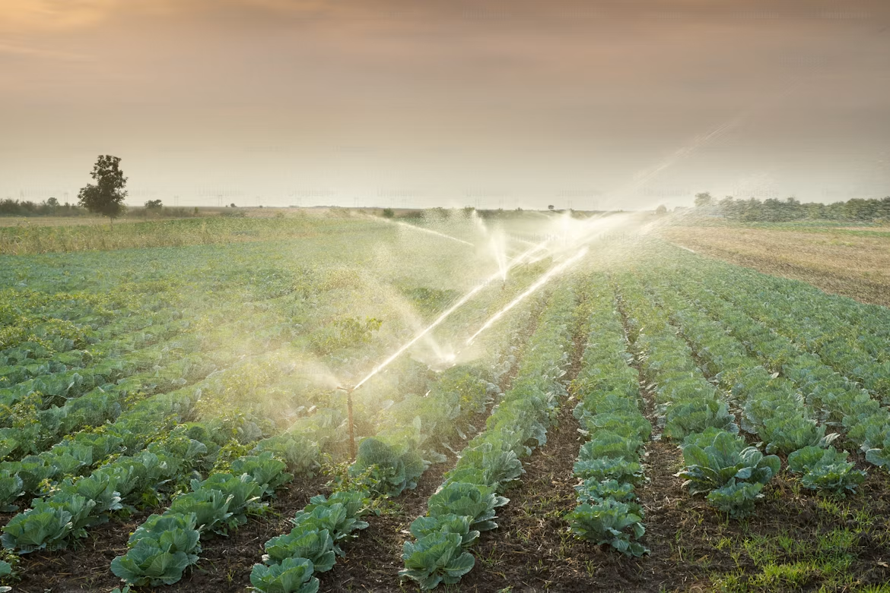
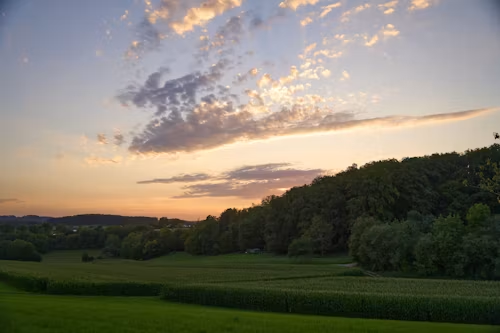

🚜 O Agronegócio e sua importância na sociedade moderna
O agronegócio é um dos principais setores da economia mundial e desempenha um papel fundamental na produção de alimentos e matérias-primas que abastecem a população. Ele envolve uma cadeia produtiva ampla e complexa que vai desde o preparo do solo, escolha das sementes e cultivo, até a colheita, armazenamento, transporte e distribuição dos produtos agrícolas. Com o avanço da tecnologia, o setor passou a utilizar máquinas modernas, sistemas de irrigação eficientes e técnicas de monitoramento que aumentaram significativamente a produtividade, porém esse crescimento precisa estar sempre alinhado à preservação ambiental, já que a exploração excessiva dos recursos naturais pode comprometer a sustentabilidade da produção no futuro.

🐝 As abelhas como base da produção agrícola
As abelhas desempenham um papel essencial na agricultura por meio da polinização, um processo natural responsável pela reprodução de diversas espécies de plantas utilizadas na alimentação humana. Esse processo garante a produção de frutas, legumes e outros alimentos fundamentais para a sobrevivência da população. No entanto, a redução da população de abelhas causada pelo uso de agrotóxicos, desmatamento e perda de habitats naturais representa uma ameaça direta à segurança alimentar e ao equilíbrio dos ecossistemas, tornando sua preservação indispensável para a continuidade da vida no planeta.

🤝 O equilíbrio entre o campo e a natureza
A relação entre o campo e a natureza é extremamente importante para a produção agrícola, pois ambos dependem diretamente um do outro para existir em equilíbrio. O campo é o espaço onde ocorre a produção de alimentos, enquanto a natureza fornece os recursos necessários para que essa produção aconteça. Quando práticas sustentáveis são aplicadas, como o manejo adequado do solo, a rotação de culturas e a preservação das áreas naturais, é possível produzir em grande escala sem causar danos ao meio ambiente. Dessa forma, o campo deixa de ser um agente de destruição e passa a ser um aliado da preservação ambiental, garantindo a continuidade da produção ao longo do tempo.

⚠️ Impactos ambientais e desequilíbrio da produção
O uso excessivo e inadequado dos recursos naturais gera diversos impactos ambientais que afetam diretamente o equilíbrio da natureza e a capacidade produtiva do solo. Entre os principais problemas estão o desmatamento, a erosão do solo, a contaminação da água e a perda da biodiversidade, que comprometem o funcionamento dos ecossistemas e reduzem a disponibilidade de recursos naturais. Esses impactos não afetam apenas o meio ambiente, mas também a produção agrícola e a qualidade de vida das populações, tornando essencial a adoção de práticas sustentáveis que minimizem os danos e garantam a preservação ambiental.

🌱 Agricultura Consciente e Sustentabilidade
O uso responsável da água garante a produção de hoje e a sustentabilidade de amanhã. A agricultura consciente busca produzir alimentos de forma eficiente sem comprometer os recursos naturais. Por meio de práticas como o uso responsável da água, a proteção do solo, a preservação da biodiversidade e a adoção de tecnologias adequadas, é possível aumentar a produtividade e reduzir impactos ambientais. Mais do que produzir, a agricultura consciente representa o compromisso de cuidar dos recursos que tornam a produção possível, garantindo que as futuras gerações também possam se beneficiar deles.

⚖️ O futuro sustentável e o equilíbrio necessário
O futuro da humanidade depende diretamente das escolhas feitas no presente em relação ao uso dos recursos naturais e à forma como a produção agrícola é conduzida. O equilíbrio entre produção e preservação ambiental é essencial para garantir a continuidade da vida no planeta, permitindo que as próximas gerações tenham acesso a um ambiente saudável e produtivo. A sustentabilidade surge como um caminho indispensável para conciliar desenvolvimento econômico e conservação ambiental, garantindo um futuro mais equilibrado e responsável.